go to ReadMe
| Table of Contents: |
|---|
1.1 Start Command Line Operation
|
|
Basic usage: oslc2cli.bat [options] [source file / directory / file package]
Current supported package types: zip, jar, tar, tar.gz, tgz
| Option | Description |
|---|---|
| -h | List all the command line options (help text) |
| -r | Output file references |
| -s | Show a summary of found licenses |
| -t | Show found tags |
| -v | Verbose mode for output |
| -v -v | More verbose mode for output |
| -x | PATH: ignore PATH inside package (if your package has a directory 'docs/', use "-x docs" to ignore it from processing) |
3.1 Open a Source file / Directory / Source package
The source file can be opened in 2 ways:
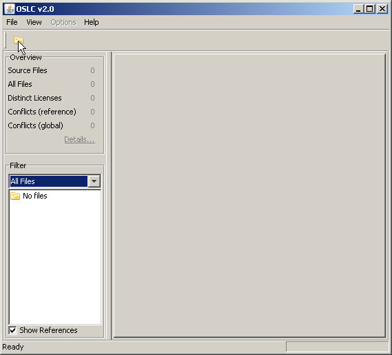
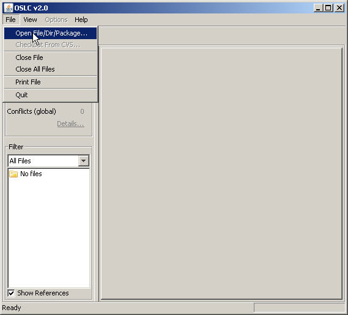
After opening a source package, the Overview pane shows the summary of the package
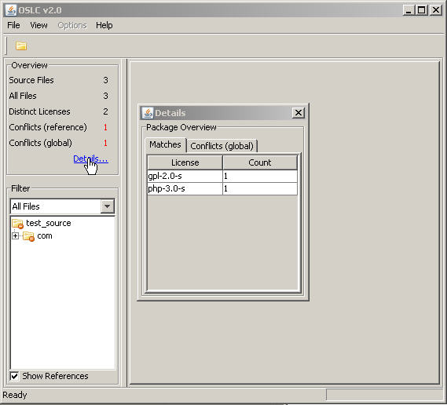
Click on Details, then the summary window prompts with the following information:
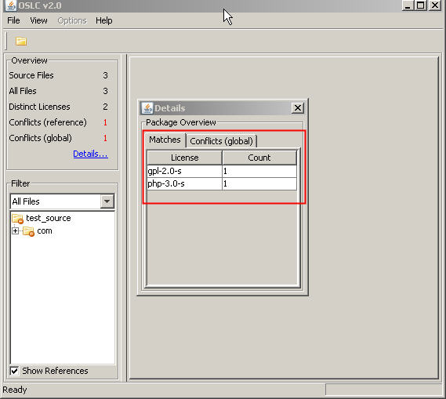
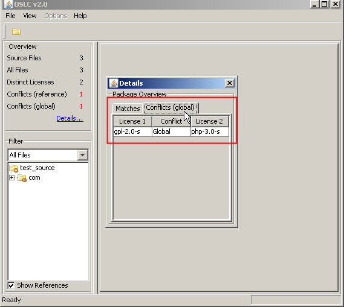
3.3 The Source Tree Browser Pane
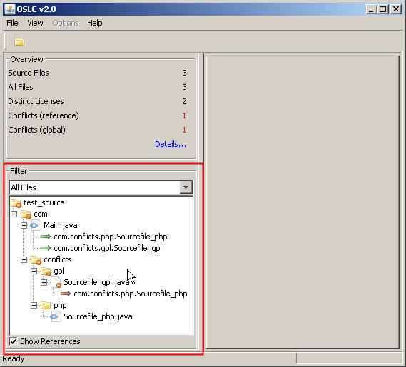
The filter list box contains the filtering options to display the source tree and its related information:
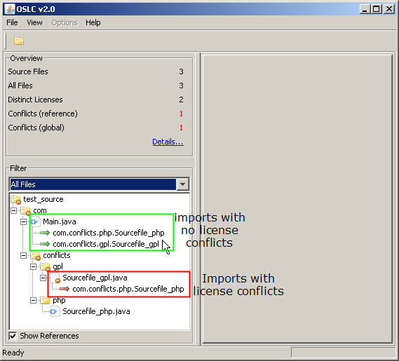
Show References - when this option is selected, the source file imports and includes are displayed in the source tree.
In Java source file view:
The file display pane provides the following features:
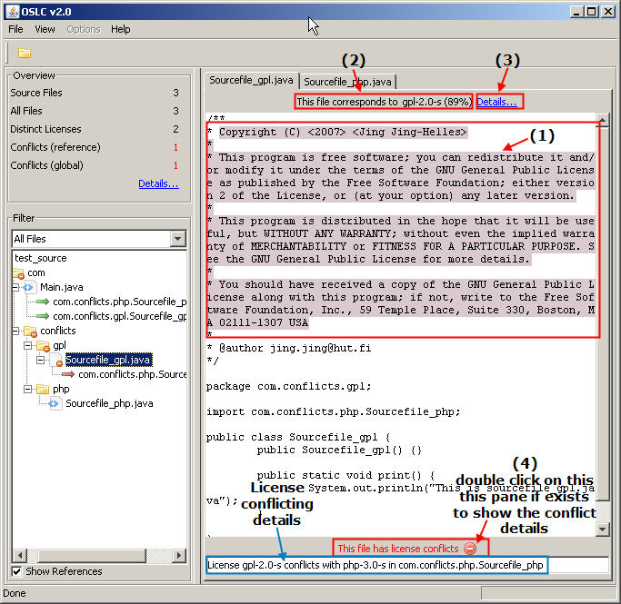
When Details is available, click on it to see detailed information in the prompt window.
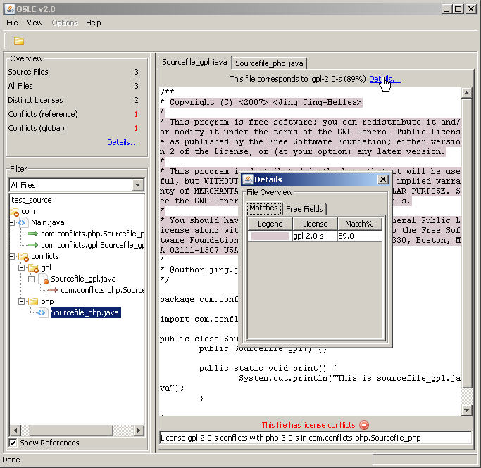
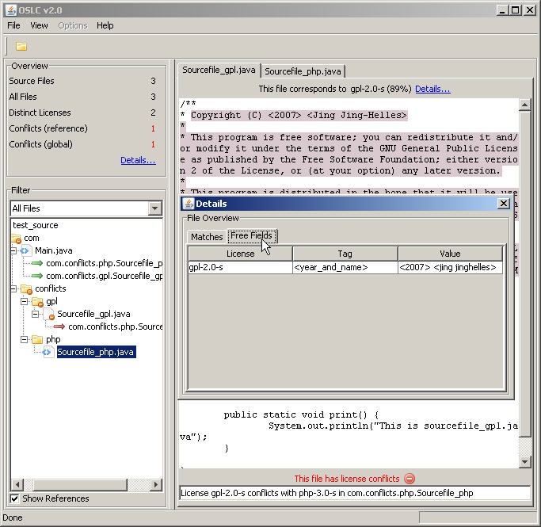
To close a tab or print a file, right click on the tab
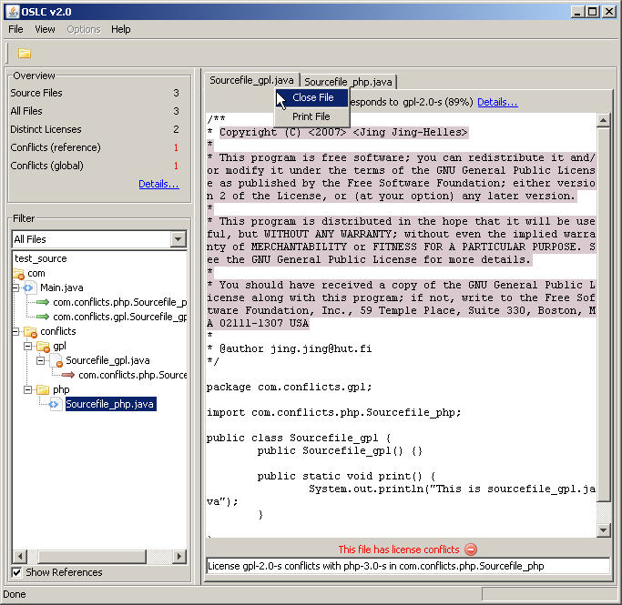
File Operations:
View Options:
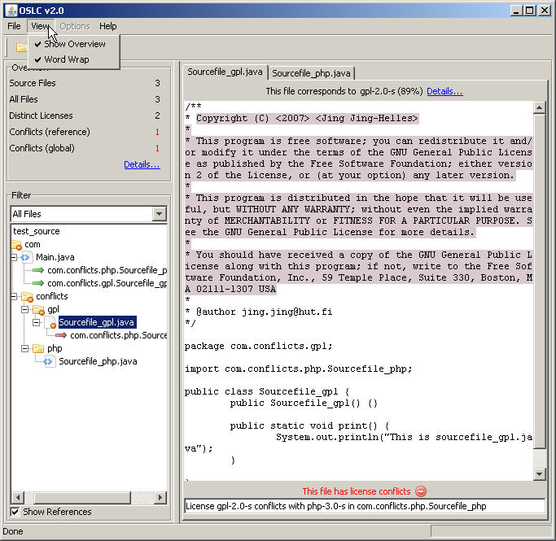
Help Pages:
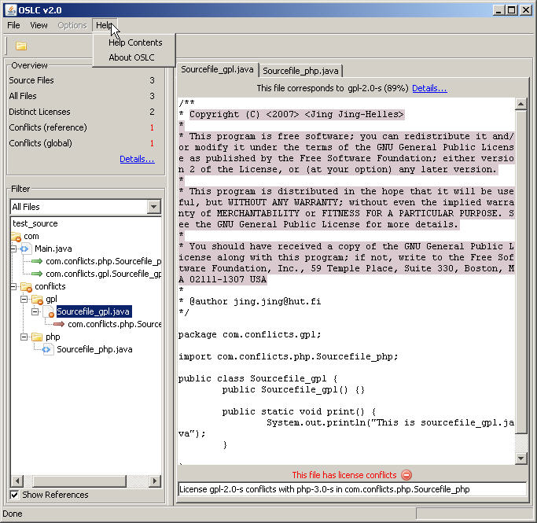
When processing large software packages (tens of thousands of files), it might be usefull to increase the memory allocated for Java virtual machine.
Memory allocation can be set by following arguments:
|
java -Xms150M -Xmx150M |
Where 150 can be increased if necessary.
The program finds license matches by identifying the longest common substring between source file's comments and a known license text. A match is reported to the user if it is length is longer that 10 words and 10% of the license text and if a better match in some other license is not overlapping the match. Non-alphanumeric characters are ignored in license matching. Match confidence-% is calculated by dividing the match length by license text length.
Forbidden phrases (identified by -f in the license name) are reported if they have a full (100%) match. They are not reported if all licenses found in the file contain the forbidden phrase as part of their normal license text.
Exceptions to a license (identified by -m in the license name) are reported if exception text is found and if the parent license is also found in a same source file.
License files must follow the naming convention below to make itself correctly recognized:
|
name [-version] [-only|]-[l|s|m|f|k][-module_name].[txt|meta] where: only = usage of future versions of the license is not permitted (for example: gpl-2.0-only) s = short version of the license text (typically located inside source files) m = file contains a license module (exception) f = file contains a forbidden phrase k = file contains a linux kernel-specific license |